Received a certificate of participation in the Anti-Drug Project, which promoted awareness of drug prevention and healthy living among students. I joined group discussions and activities that encouraged responsibility and positive lifestyle choices.
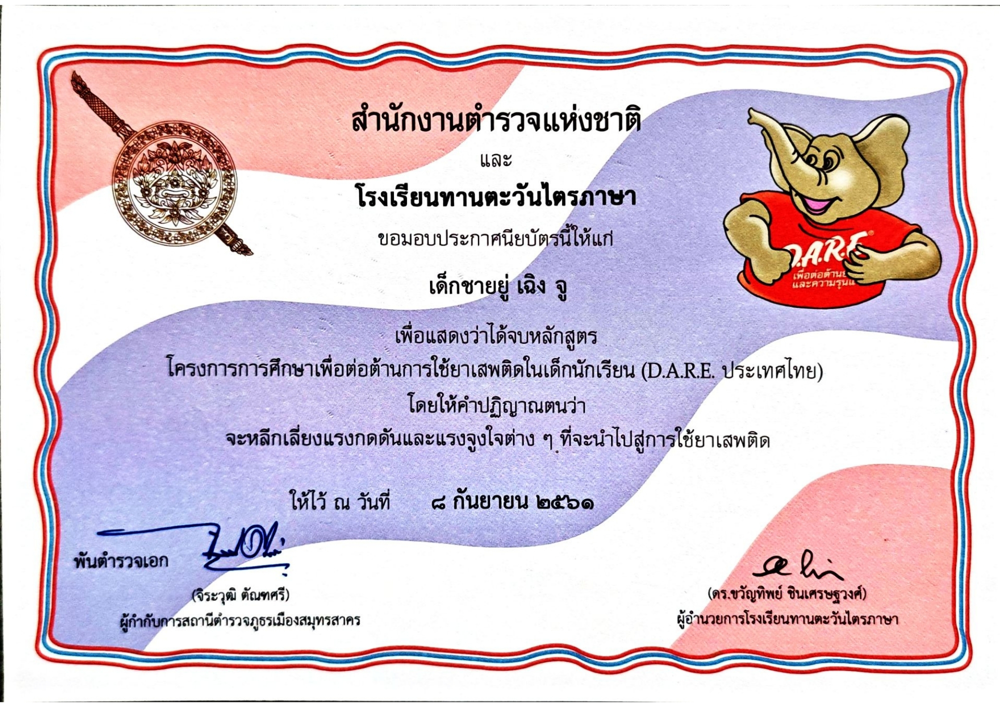 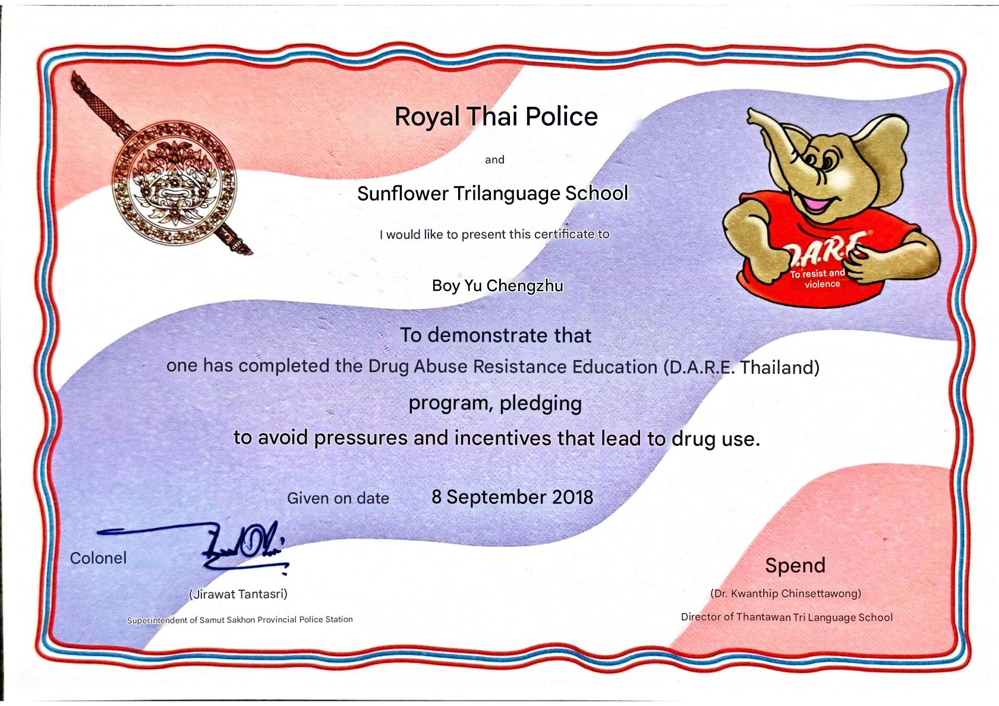Received a certificate of participation in a charity walk-run event organized to raise funds for building houses for people without homes. This activity taught me the value of teamwork, compassion, and contributing to community development.
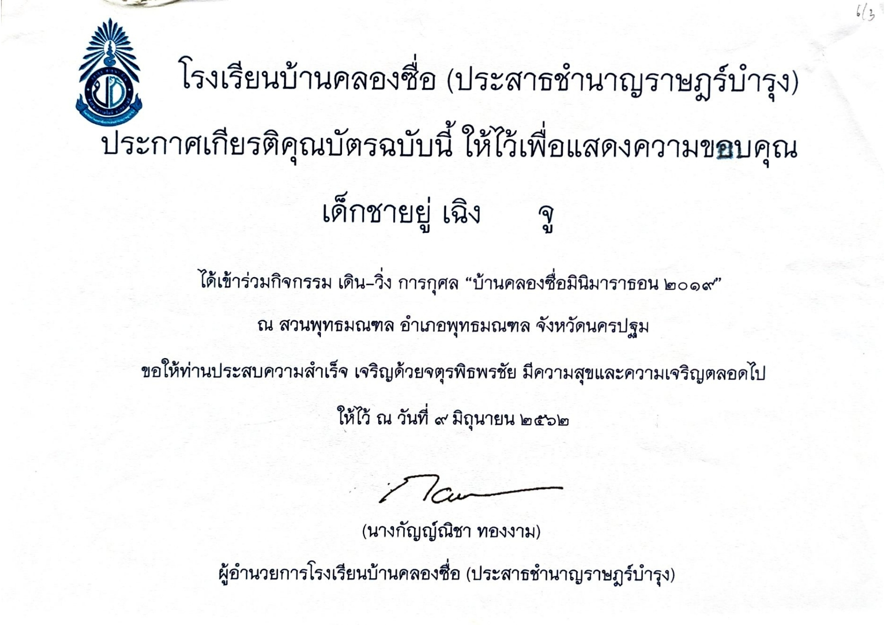 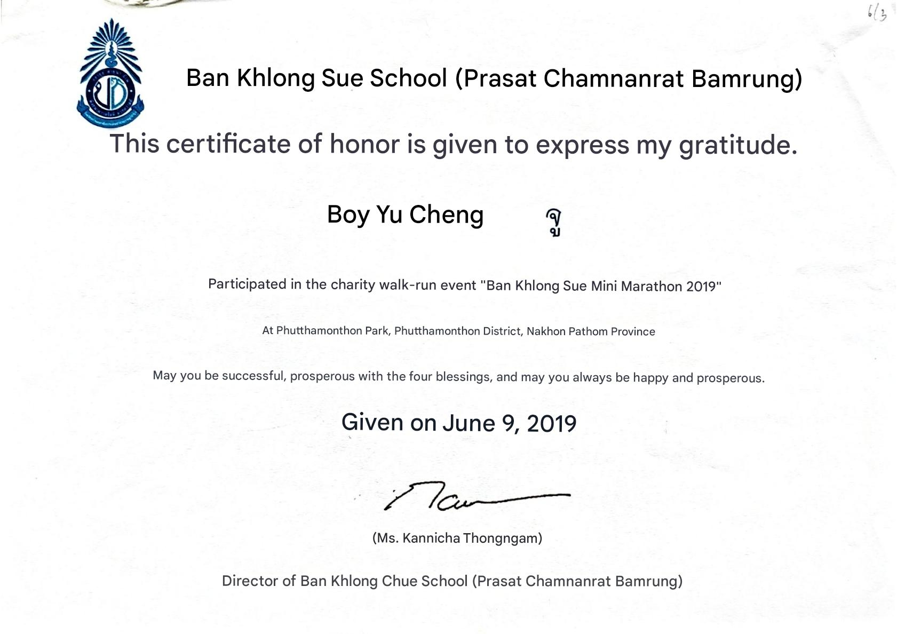Completed the online course Mastering AI-Powered Design & Productivity, where I learned how to use AI tools to enhance design processes, improve efficiency, and streamline workflow. The course strengthened my technical skills and understanding of AI applications in real-world projects.
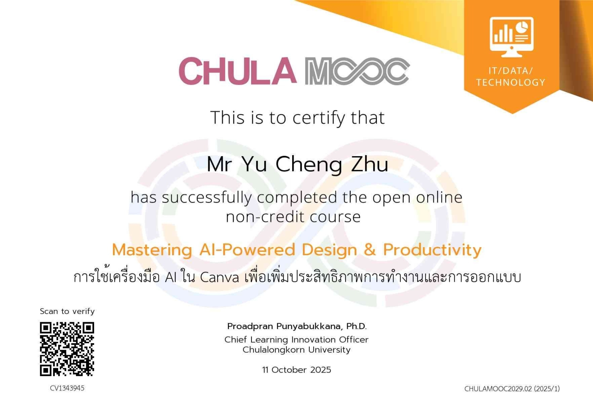 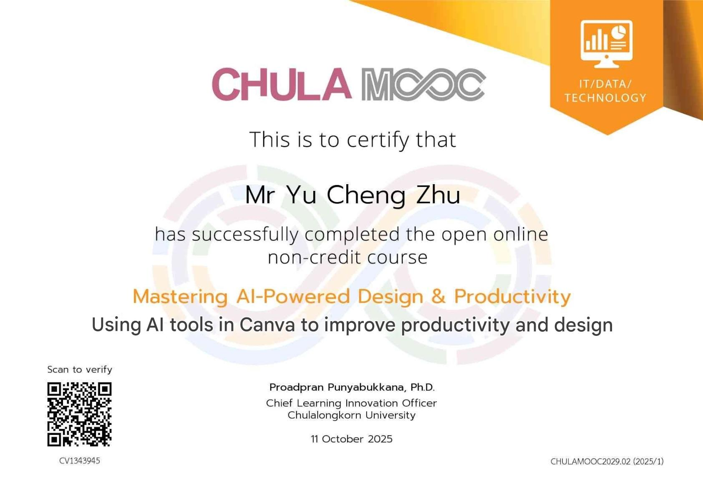Completed the online course Solving Everyday Life Problems with Computational Thinking, where I learned to analyze problems, break them into manageable parts, and develop logical solutions using computational methods. The course enhanced my problem-solving and analytical skills.
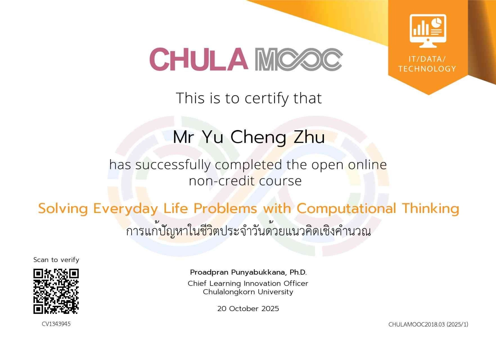 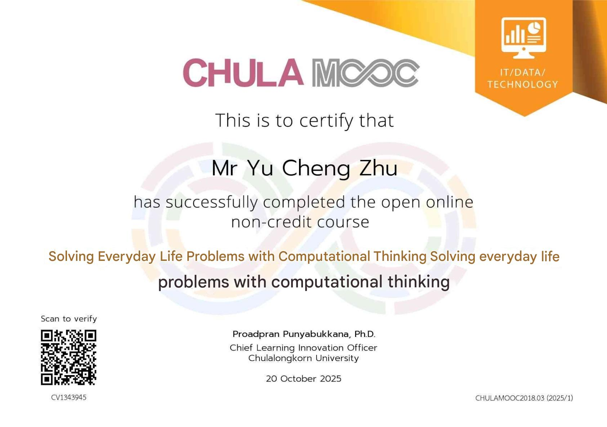Completed the online course Learn Coding Basics with Block-based Programming, where I learned fundamental programming concepts using block-based tools. The course helped me develop logical thinking and problem-solving skills while building simple programs and projects
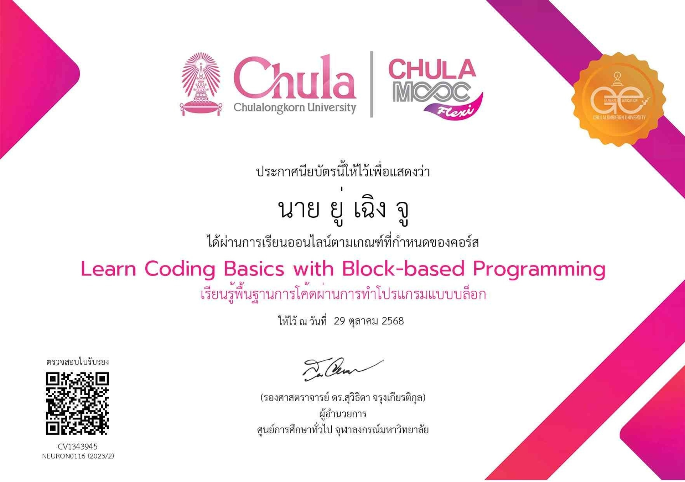Received a volunteer certificate for supporting the Royal School Competition. I contributed my time and efforts to assist the school team, helping them prepare and succeed in the competition. This experience strengthened my teamwork, responsibility, and commitment to achieving goals.
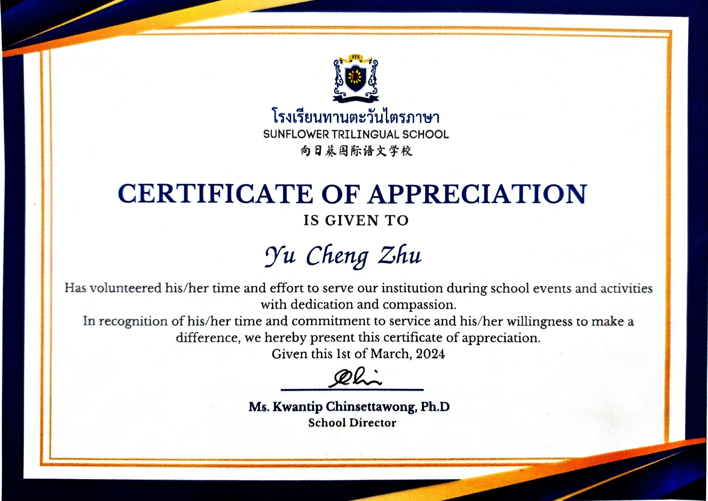 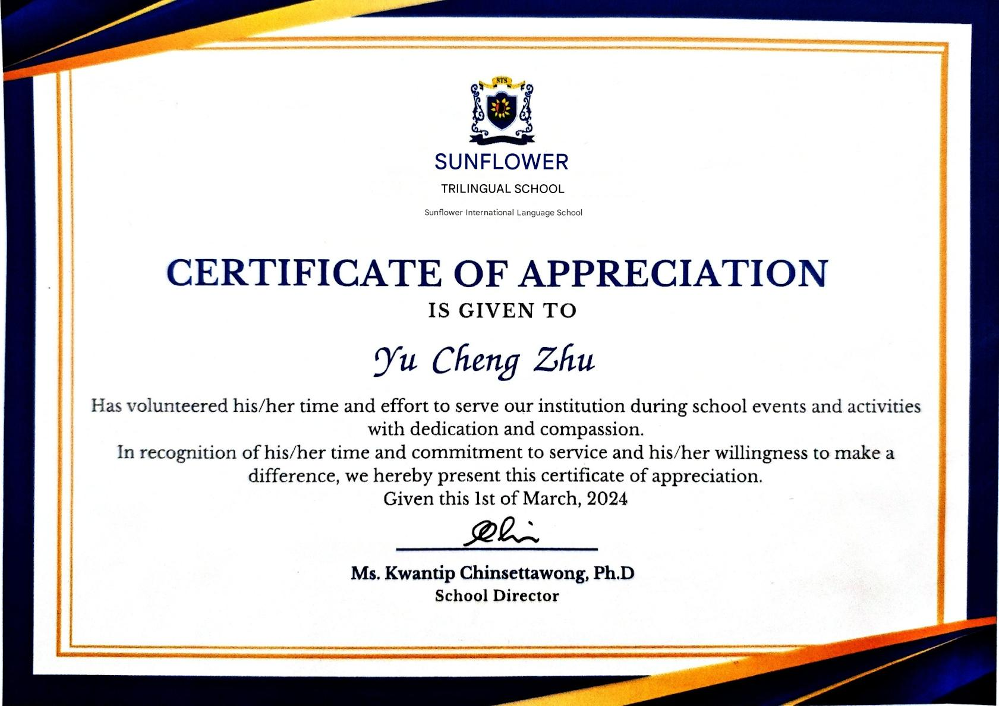Received a certificate of participation in The Pizza Company Invites Children to Read activity, which encouraged children to develop reading habits and explore stories. I took part in reading sessions and interactive activities that promoted literacy and learning.
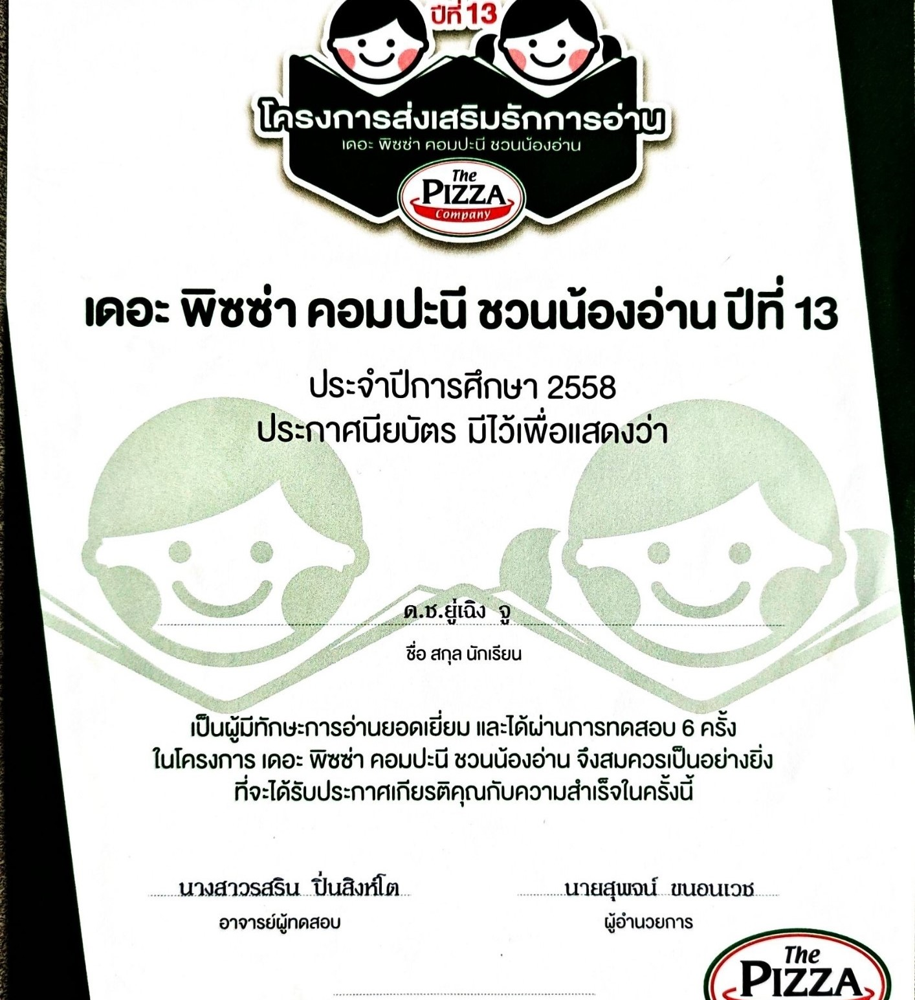 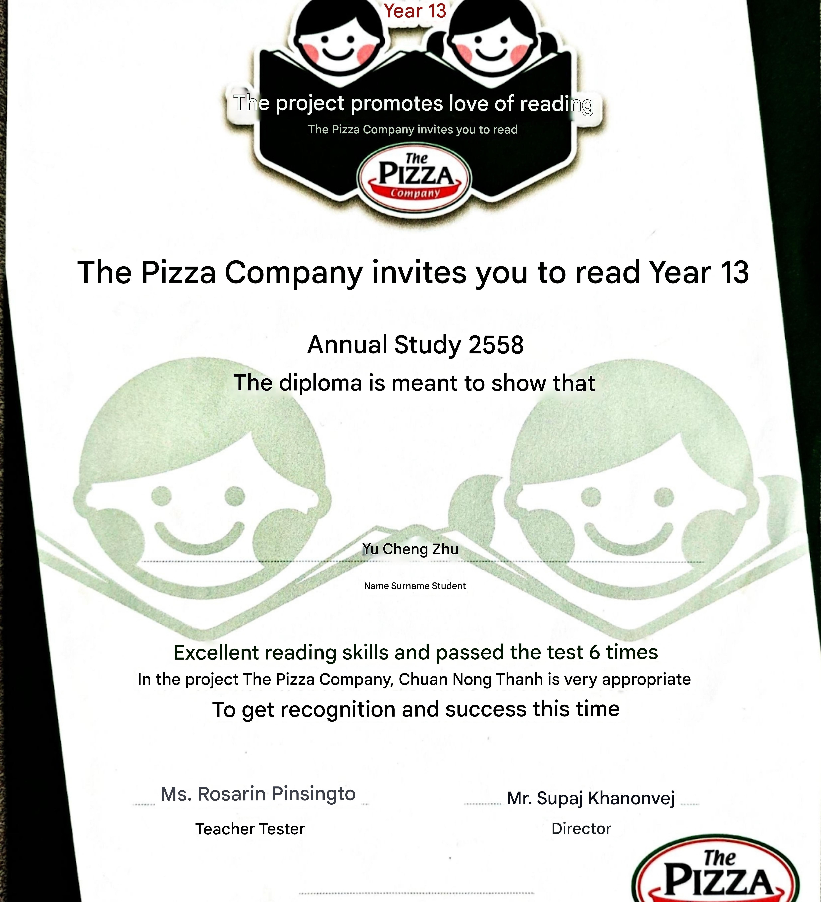Awarded a silver medal in the Healthy Dessert Cooking Business Competition for creating nutritious and innovative desserts. This experience strengthened my creativity, culinary skills, and understanding of business concepts in food preparation.
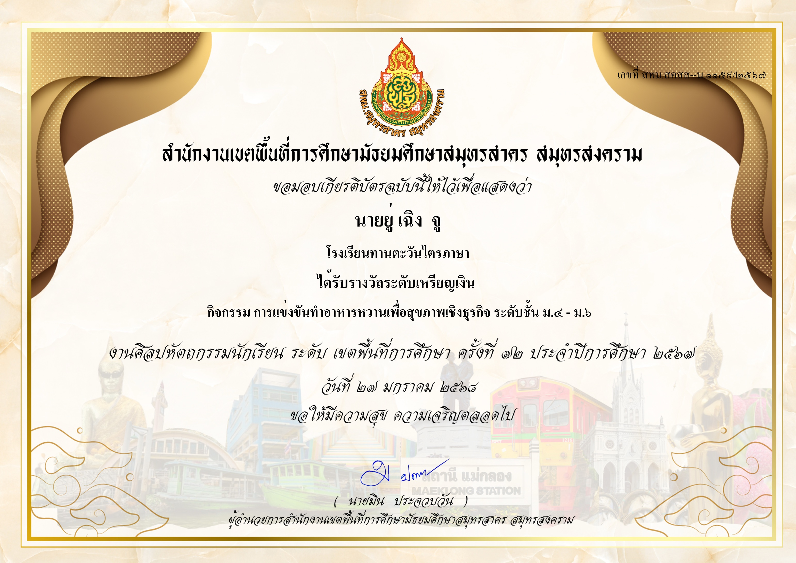